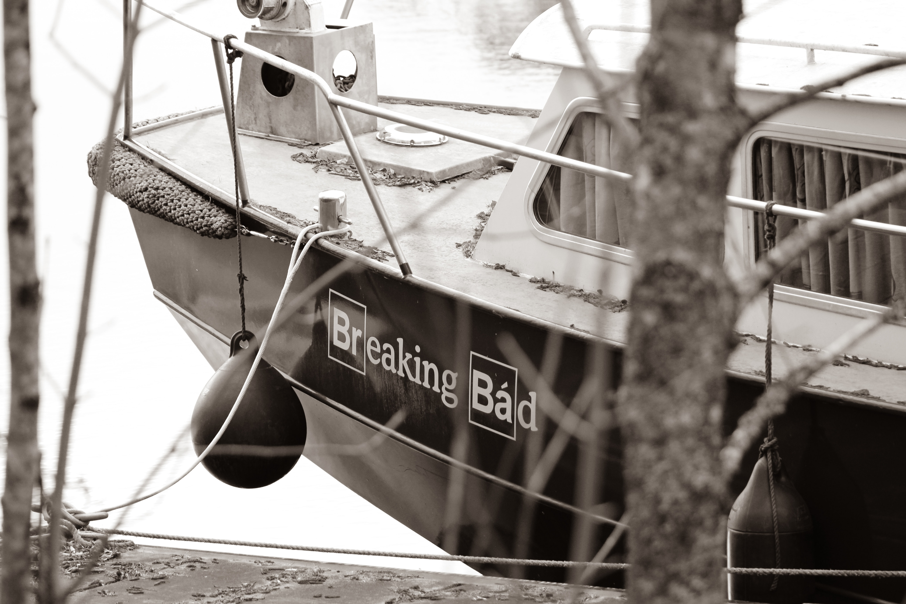

is an American neo-Western crime drama television series created and produced by Vince Gilligan.
The show aired on AMC from January 20, 2008, to September 29, 2013, consisting of five seasons for a total of 62 episodes. It was set and filmed in Albuquerque, New Mexico, and tells the story of Walter White (Bryan Cranston), an underpaid and dispirited high school chemistry teacher who is struggling with a recent diagnosis of stage-three lung cancer. White turns to a life of crime, partnering with his former student Jesse Pinkman (Aaron Paul), by producing and distributing crystal meth to secure his family's financial future before he dies, while navigating the dangers of the criminal underworld. The title is a Southern colloquialism meaning "to turn to a life of crime".[8] Gilligan characterized the series as showing Walter's transformation from a soft-spoken Mr. Chips into Scarface.